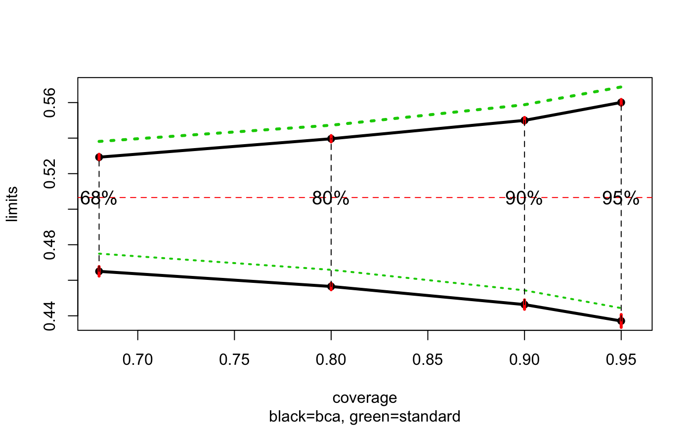
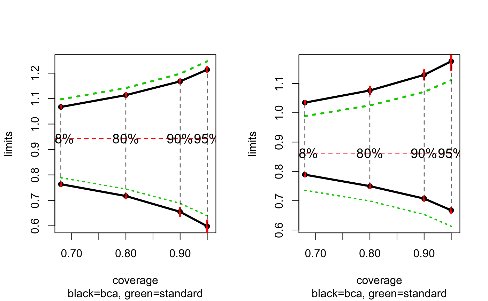

Automatic Construction of Bootstrap Confidence Intervals
Bradley Efron and Balasubramanian Narasimhan
2018-08-28
Source:vignettes/bcaboot.Rmd
bcaboot.RmdIntroduction
Bootstrap confidence intervals depend on three elements:
- the cdf of the bootstrap replications \(t_i^*\), \(i=1\ldots B\)
- the bias-correction number \(z_0 = \Phi(\sum_i^B I(t_i^* < t_0) / B )\) where \(t_0=f(x)\) is the original estimate
- the acceleration number \(a\) that measures the rate of change in \(\sigma_{t_0}\) as \(x\), the data changes.
The first two of these depend only on the bootstrap distribution, and not how it is generated: parametrically or non-parametrically.
Package bcaboot aims to make construction of bootstrap confidence intervals almost automatic. The three main functions for the user are:
-
bcajackandbcajack2for nonparametric bootstrap -
bcaparfor parametric bootstrap
Further details are in the Efron and Narasimhan (2018) paper. Much of the theory behind the approach can be found in references Efron (1987), DiCiccio and Efron (1992), DiCiccio and Efron (1996), and Efron and Hastie (2016).
A Nonparametric Example
Suppose we wish to construct bootstrap confidence intervals for an \(R^2\)-statistic from a linear regression. Using the diabetes data from the lars (442 by 11) as an example, we use the function below to regress the y on x, a matrix of of 10 predictors, to compute \(R^2\).
data(diabetes, package = "bcaboot")
Xy <- cbind(diabetes$x, diabetes$y)
rfun <- function(Xy) {
y <- Xy[, 11]
X <- Xy[, 1:10]
summary(lm(y ~ X) )$adj.r.squared
}Constructing bootstrap confidence intervals involves merely calling bcajack:
The result contains several components. The confidence interval limits can be obtained via
| bca | jacksd | std | pct | |
|---|---|---|---|---|
| 0.025 | 0.437 | 0.004 | 0.444 | 0.006 |
| 0.05 | 0.446 | 0.003 | 0.454 | 0.013 |
| 0.1 | 0.457 | 0.002 | 0.466 | 0.032 |
| 0.16 | 0.465 | 0.003 | 0.475 | 0.060 |
| 0.5 | 0.498 | 0.001 | 0.507 | 0.293 |
| 0.84 | 0.529 | 0.002 | 0.538 | 0.672 |
| 0.9 | 0.540 | 0.002 | 0.547 | 0.768 |
| 0.95 | 0.550 | 0.002 | 0.559 | 0.862 |
| 0.975 | 0.560 | 0.002 | 0.569 | 0.918 |
The first column shows the estimated Bca confidence limits at the requested alpha percentiles which can be compared with the standard limits \(\theta \pm \hat{\sigma}z_{\alpha}\) under the column titled standard. The jacksd column jacksd gives the internal standard errors for the Bca limits, quite small in this example. The pct column gives percentiles of the ordered B bootstrap replications corresponding to the Bca limits, e.g. the 91.85 percentile equals the the .975 Bca limit .5600968.
Further details are provided by the stats component.
| theta | sdboot | z0 | a | sdjack | |
|---|---|---|---|---|---|
| est | 0.507 | 0.032 | -0.272 | -0.007 | 0.033 |
| jsd | 0.000 | 0.000 | 0.030 | 0.000 | 0.000 |
The first column theta is the original point estimate of the parameter of interest, sdboot is its bootstrap estimate of standard error. The quantity z0 is the Bca bias correction value, in this case quite negative; a is the acceleration, a component of the Bca limits (nearly zero here). Finally, sdjack is the jackknife estimate of standard error for theta.
The bottom line gives the internal standard errors for the five quantities above. This is substantial for z0 above.
The resulting object can be plotted using bcaplot.

A Parametric Example
A logistic regression was fit to data on 812 neonates at a large clinic. Here is a summary of the dataset.
## 'data.frame': 812 obs. of 12 variables:
## $ gest: num -0.729 -0.729 1.156 -2.884 0.348 ...
## $ ap : num 0.856 0.856 0.856 -2.076 0.856 ...
## $ bwei: num -0.694 -0.694 0.786 -2.174 0.786 ...
## $ gen : num 1.227 -0.814 -0.814 1.227 -0.814 ...
## $ resp: num 0.78 -0.939 1.639 1.639 1.639 ...
## $ head: num -0.402 -0.402 -0.402 -0.402 -0.402 ...
## $ hr : num -0.256 -0.256 -0.256 -0.256 -0.256 ...
## $ cpap: num 1.866 -0.535 1.866 1.866 1.866 ...
## $ age : num -0.94 -0.94 -0.94 -0.94 1.06 ...
## $ temp: num -0.669 -0.669 -0.669 -0.669 2.339 ...
## $ size: num 0.484 -1.319 -1.319 0.484 0.484 ...
## $ y : int 1 1 1 1 1 1 1 1 1 1 ...The goal was to predict death versus survival—\(y\) is 1 or 0, respectively—on the basis of 11 baseline variables of which one of them resp was of particular concern. (There were 207 deaths and 605 survivors.) So here \(\theta\), the parameter of interest is the coefficient of resp. Discussions with the investigator suggested a weighting of 4 to 1 of deaths versus non-deaths.
A Logistic Model
weights <- with(neonates, ifelse(y == 0, 1, 4))
glm_model <- glm(formula = y ~ ., family = "binomial", weights = weights, data = neonates)
summary(glm_model)##
## Call:
## glm(formula = y ~ ., family = "binomial", data = neonates, weights = weights)
##
## Deviance Residuals:
## Min 1Q Median 3Q Max
## -3.0338 -0.9211 -0.5607 0.1697 3.9021
##
## Coefficients:
## Estimate Std. Error z value Pr(>|z|)
## (Intercept) -0.26510 0.07598 -3.489 0.000485 ***
## gest -0.70602 0.13117 -5.383 7.35e-08 ***
## ap -0.78594 0.07874 -9.982 < 2e-16 ***
## bwei -0.23332 0.12592 -1.853 0.063879 .
## gen -0.04107 0.07355 -0.558 0.576594
## resp 0.94306 0.08974 10.509 < 2e-16 ***
## head 0.04813 0.08057 0.597 0.550299
## hr 0.03504 0.07191 0.487 0.626045
## cpap 0.43438 0.08869 4.898 9.70e-07 ***
## age 0.15727 0.08492 1.852 0.064041 .
## temp -0.05960 0.08506 -0.701 0.483520
## size -0.37477 0.09919 -3.778 0.000158 ***
## ---
## Signif. codes: 0 '***' 0.001 '**' 0.01 '*' 0.05 '.' 0.1 ' ' 1
##
## (Dispersion parameter for binomial family taken to be 1)
##
## Null deviance: 1951.7 on 811 degrees of freedom
## Residual deviance: 1187.2 on 800 degrees of freedom
## AIC: 1211.2
##
## Number of Fisher Scoring iterations: 5Parametric bootstrapping in this context requires us to independently sample the response according to the estimated probabilities from regression model. As discussed in the paper accompanying this software, routine bcapar also requires sufficient statistics \(\hat{\beta} = M^\prime y\) where \(M\) is the model matrix. Therefore, it makes sense to have a function do the work. The function glm_boot below returns a list of the estimate \(\hat{\theta}\), the bootstrap estimates, and the sufficient statistics.
glm_boot <- function(B, glm_model, weights, var = "resp") {
pi_hat <- glm_model$fitted.values
n <- length(pi_hat)
y_star <- sapply(seq_len(B), function(i) ifelse(runif(n) <= pi_hat, 1, 0))
beta_star <- apply(y_star, 2, function(y) {
boot_data <- glm_model$data
boot_data$y <- y
coef(glm(formula = y ~ ., data = boot_data, weights = weights, family = "binomial"))
})
list(theta = coef(glm_model)[var],
theta_star = beta_star[var, ],
suff_stat = t(y_star) %*% model.matrix(glm_model))
}Now we can compute the bootstrap estimates using bcapar.
set.seed(3891)
glm_boot_out <- glm_boot(B = 2000, glm_model = glm_model, weights = weights)
glm_bca <- bcapar(t0 = glm_boot_out$theta,
tt = glm_boot_out$theta_star,
bb = glm_boot_out$suff_stat)We can examine the bootstrap limits and statistics.
| bca | jacksd | pct | std | |
|---|---|---|---|---|
| 0.025 | 0.598 | 0.023 | 0.006 | 0.639 |
| 0.05 | 0.655 | 0.016 | 0.016 | 0.688 |
| 0.1 | 0.717 | 0.009 | 0.040 | 0.745 |
| 0.16 | 0.764 | 0.006 | 0.073 | 0.789 |
| 0.5 | 0.913 | 0.004 | 0.333 | 0.943 |
| 0.84 | 1.067 | 0.004 | 0.710 | 1.097 |
| 0.9 | 1.114 | 0.009 | 0.797 | 1.142 |
| 0.95 | 1.168 | 0.008 | 0.880 | 1.198 |
| 0.975 | 1.214 | 0.010 | 0.930 | 1.247 |
| theta | sd | a | az | z0 | A | sdd | mean | |
|---|---|---|---|---|---|---|---|---|
| est | 0.943 | 0.155 | -0.019 | -0.001 | -0.215 | 0.006 | 0.129 | 0.982 |
| jsd | 0.000 | 0.002 | 0.008 | 0.012 | 0.024 | 0.024 | 0.004 | 0.003 |
Our bootstrap standard error using \(B=2000\) samples for resp can be read off from the last table as \(0.943\pm 0.155\). We can also see a small upward bias from the fact that 0.585 proportion of bootstrap replicates were above \(0.943\). This is also reflected in the bias-corrector term \(\hat{z}_0= -0.215\) in the table above with an internal standard error of $0.024.
A Penalized Logistic Model
Now suppose we wish to use a nonstandard estimation procedure, for example, via the glmnet package, which uses cross-validation to figure out a best fit, corresponding to a penalization parameter \(\lambda\) (named lambda.min).
X <- as.matrix(neonates[, seq_len(11)]) ; Y <- neonates$y;
glmnet_model <- glmnet::cv.glmnet(x = X, y = Y, family = "binomial", weights = weights)We can examine the estimates at the lambda.min as follows.
coefs <- as.matrix(coef(glmnet_model, s = glmnet_model$lambda.min))
knitr::kable(data.frame(variable = rownames(coefs), coefficient = coefs[, 1]), row.names = FALSE, digits = 3)| variable | coefficient |
|---|---|
| (Intercept) | -0.208 |
| gest | -0.524 |
| ap | -0.678 |
| bwei | -0.272 |
| gen | 0.000 |
| resp | 0.862 |
| head | 0.000 |
| hr | 0.000 |
| cpap | 0.378 |
| age | 0.042 |
| temp | 0.000 |
| size | -0.208 |
Following the lines above, we create a helper function to perform the bootstrap.
glmnet_boot <- function(B, X, y, glmnet_model, weights, var = "resp") {
lambda <- glmnet_model$lambda.min
theta <- as.matrix(coef(glmnet_model, s = lambda))
pi_hat <- predict(glmnet_model, newx = X, s = "lambda.min", type = "response")
n <- length(pi_hat)
y_star <- sapply(seq_len(B), function(i) ifelse(runif(n) <= pi_hat, 1, 0))
beta_star <- apply(y_star, 2,
function(y) {
as.matrix(coef(glmnet::glmnet(x = X, y = y, lambda = lambda, weights = weights, family = "binomial")))
})
rownames(beta_star) <- rownames(theta)
list(theta = theta[var, ],
theta_star = beta_star[var, ],
suff_stat = t(y_star) %*% X)
}And off we go.
glmnet_boot_out <- glmnet_boot(B = 2000, X, y, glmnet_model, weights)
glmnet_bca <- bcapar(t0 = glmnet_boot_out$theta,
tt = glmnet_boot_out$theta_star,
bb = glmnet_boot_out$suff_stat)We can compare the output of this against what we got from glm above.
We can examine the bootstrap limits and statistics.
| bca | jacksd | pct | std | |
|---|---|---|---|---|
| 0.025 | 0.667 | 0.009 | 0.123 | 0.613 |
| 0.05 | 0.707 | 0.008 | 0.201 | 0.653 |
| 0.1 | 0.750 | 0.007 | 0.320 | 0.699 |
| 0.16 | 0.789 | 0.006 | 0.430 | 0.736 |
| 0.5 | 0.915 | 0.006 | 0.794 | 0.862 |
| 0.84 | 1.034 | 0.005 | 0.964 | 0.988 |
| 0.9 | 1.076 | 0.013 | 0.981 | 1.025 |
| 0.95 | 1.129 | 0.016 | 0.992 | 1.071 |
| 0.975 | 1.176 | 0.031 | 0.997 | 1.111 |
| theta | sd | a | az | z0 | A | sdd | mean | |
|---|---|---|---|---|---|---|---|---|
| est | 0.862 | 0.127 | -0.009 | -0.025 | 0.411 | -0.006 | 0.108 | 0.811 |
| jsd | 0.000 | 0.002 | 0.011 | 0.013 | 0.028 | 0.032 | 0.005 | 0.002 |
The shrinkage is evident; we now have the bootstrap estimate is now \(0.862\pm 0.127\). In fact, we now have only 0.3405 proportion of bootstrap replicates above \(0.862\). Therefore, the bias corrector is large: \(\hat{z}_0 = 0.411.\)
Finally, we can plot both the glm and glmnet results side-by-side.

Ratio of Independent Variance Estimates
Assume we have two independent estimates of variance from normal theory:
\[ \hat{\sigma}_1^2\sim\frac{\sigma_1^2\chi_{n_1}^2}{n_1}, \]
and
\[ \hat{\sigma}_2^2\sim\frac{\sigma_2^2\chi_{n_2}^2}{n_2}. \]
Suppose now that our parameter of interest is
\[ \theta=\frac{\sigma_1^2}{\sigma_2^2} \]
for which we wish to compute confidence limits. In this setting, theory yields exact limits:
\[ \hat{\theta}(\alpha) = \frac{\hat{\theta}}{F_{n_1,n_2}^{1-\alpha}}. \]
We can apply bcapar to this problem. As before, here are our helper functions.
ratio_boot <- function(B, v1, v2) {
s1 <- sqrt(v1) * rchisq(n = B, df = n1) / n1
s2 <- sqrt(v2) * rchisq(n = B, df = n2) / n2
theta_star <- s1 / s2
beta_star <- cbind(s1, s2)
list(theta = v1 / v2,
theta_star = theta_star,
suff_stat = beta_star)
}
funcF <- function(beta) {
beta[1] / beta[2]
}Note that we have an additional function funcF which corresponds to \(\tau(\hat{\beta}^*)\) in the paper. This is the function expressing the parameter of interest as as a function of the sample.
B <- 16000; n1 <- 10; n2 <- 42
ratio_boot_out <- ratio_boot(B, 1, 1)
result <- bcapar(t0 = ratio_boot_out$theta,
tt = ratio_boot_out$theta_star,
bb = ratio_boot_out$suff_stat, func = funcF)The limits obtained are shown below, along with the exact limits as the last column.
exact <- 1 / qf(df1 = n1, df2 = n2, p = 1 - as.numeric(rownames(result$lims)))
knitr::kable(cbind(result$lims, exact = exact), digits = 3)| bca | jacksd | pct | std | abc | exact | |
|---|---|---|---|---|---|---|
| 0.025 | 0.416 | 0.007 | 0.067 | -0.054 | 0.396 | 0.422 |
| 0.05 | 0.477 | 0.006 | 0.103 | 0.116 | 0.465 | 0.484 |
| 0.1 | 0.562 | 0.005 | 0.164 | 0.311 | 0.557 | 0.570 |
| 0.16 | 0.639 | 0.008 | 0.230 | 0.465 | 0.642 | 0.650 |
| 0.5 | 1.051 | 0.007 | 0.574 | 1.000 | 1.052 | 1.053 |
| 0.84 | 1.776 | 0.021 | 0.903 | 1.535 | 1.790 | 1.800 |
| 0.9 | 2.093 | 0.033 | 0.952 | 1.689 | 2.118 | 2.128 |
| 0.95 | 2.572 | 0.053 | 0.985 | 1.884 | 2.659 | 2.655 |
| 0.975 | 3.095 | 0.091 | 0.996 | 2.054 | 3.302 | 3.247 |
Clearly the bca limits match the exact values very well and suggests a large upward correction to the standard limits. Here the corrections are all positive as seen in the table below; \(\hat{z}_0 = 0.093\) and \(\hat{a} = 0.092\).
| theta | sd | a | az | z0 | A | sdd | mean | |
|---|---|---|---|---|---|---|---|---|
| est | 1 | 0.538 | 0.092 | 0.088 | 0.093 | 0.496 | 0.503 | 1.054 |
| jsd | 0 | 0.004 | 0.004 | 0.005 | 0.010 | 0.020 | 0.003 | 0.004 |
| x | |
|---|---|
| a | 0.094 |
| z0 | 0.094 |
| ustat | sdu | B | |
|---|---|---|---|
| est | 0.946 | 0.487 | 16000 |
| jsd | 0.004 | 0.004 | 0 |
The plot below shows that there is moderate amount of internal error in \(\hat{\theta}_{bca}(0.975)\) as shown by the red bar. The pct column suggests why: \(\hat{\theta}_{bca}(0.975)\) occurs at the \(0.996\)-quantile of the 16,000 replications, i.e., at the 64th largest \(\hat{\theta}\), where there is a limited amount of data for estimating the distribution.

References
DiCiccio, Thomas, and Bradley Efron. 1992. “More Accurate Confidence Intervals in Exponential Families.” Biometrika 79 (2). [Oxford University Press, Biometrika Trust]: 231–45. http://www.jstor.org/stable/2336835.
DiCiccio, Thomas J., and Bradley Efron. 1996. “Bootstrap Confidence Intervals.” Statist. Sci. 11 (3). The Institute of Mathematical Statistics: 189–228. https://doi.org/10.1214/ss/1032280214.
Efron, Bradley. 1987. “Better Bootstrap Confidence Intervals.” Journal of the American Statistical Association 82 (397). [American Statistical Association, Taylor & Francis, Ltd.]: 171–85. http://www.jstor.org/stable/2289144.
Efron, Bradley, and Trevor Hastie. 2016. Computer Age Statistical Inference: Algorithms, Evidence, and Data Science. 1st ed. New York, NY, USA: Cambridge University Press.
Efron, Bradley, and Balasubramanian Narasimhan. 2018. “The Automatic Construction of Bootstrap Confidence Intervals.”